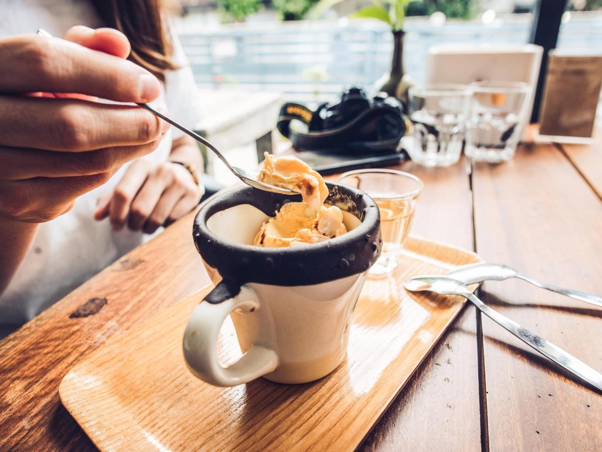
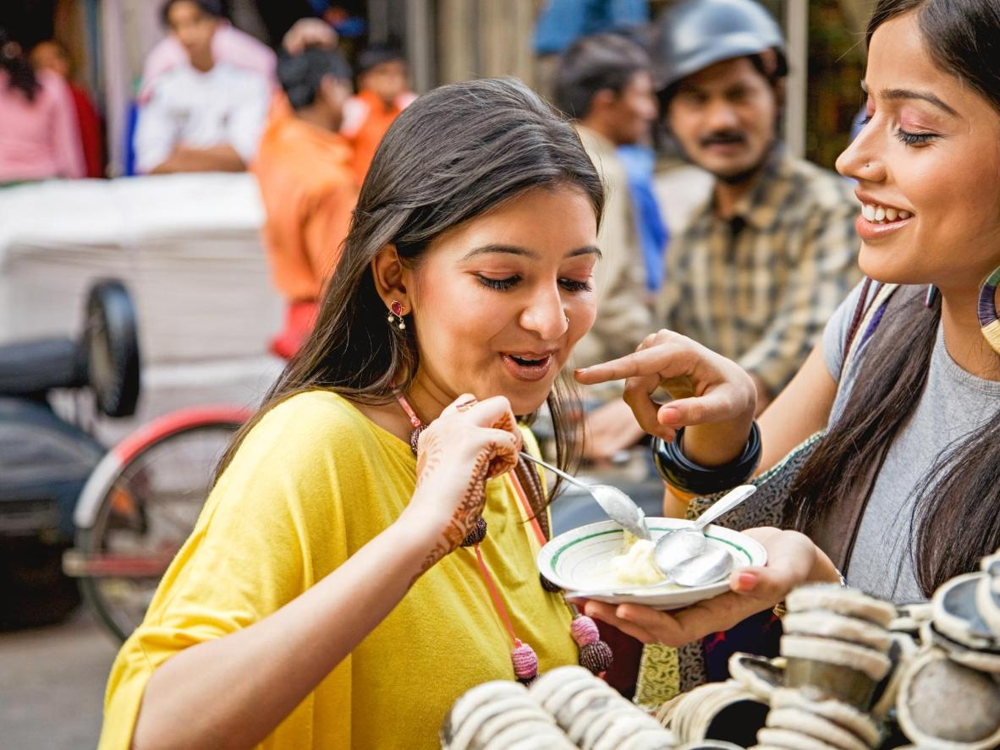
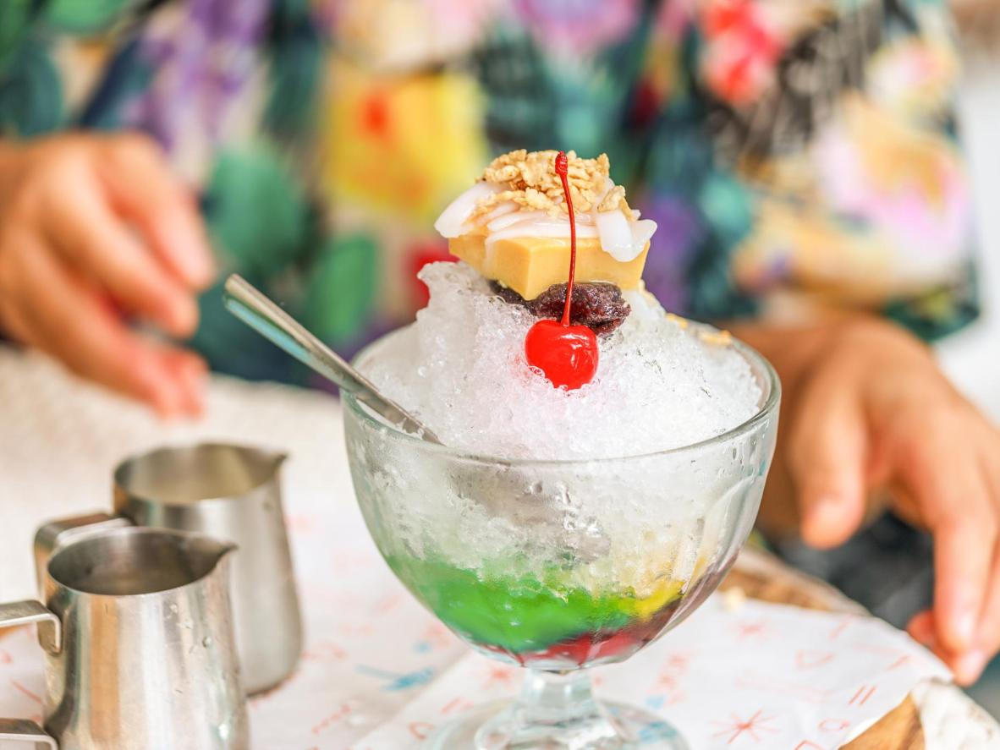

Летний пудинг, Великобритания

Разрежьте летний пудинг, чтобы полюбоваться яркой ягодной начинкой
Классический британский десерт идеально подойдет для ласковых летних вечеров. Готовится этот пудинг из сезонных ягод, которые служат начинкой пропитанному соком коржу или булочке, и подается с щедрой порцией густых сливок. Освежающее лакомство приобретает нужную консистенцию за ночь — так вкус становится насыщенным. Разрежьте пудинг на следующий день и пусть яркая ягодная начинка выплеснется на тарелку. Присмотритесь к гостевому дому Bungalow in Notting Hill, в окрестностях которого множество ресторанов, или приготовьте свой собственный летний пудинг и наслаждайтесь десертом в солнечном саду.
Аффогато, Италия
«Аффогато» в переводе с итальянского значит «утонувший», а сам десерт подразумевает, что вы утопите мороженое в чашечке эспрессо
«Аффогато» в переводе с итальянского означает «утонувший» и отсылает к способу приготовления этого лакомства. Чтобы насладиться аффогато, необходимо погрузить ложку мороженого в эспрессо. Стакан или миску необходимо предварительно остудить, чтобы кофе не расплавил мороженое слишком быстро, а мягко обволакивал его. Контрастное сочетание горячего и холодного, резкого вкуса кофе и мягкой сладости мороженого доставят вам истинное наслаждение. За превосходным аффогато отправляйтесь в Рим. Остановиться рекомендуем в великолепном отеле Vatica B&B Roma в самом центре города
Кулфи, Индия
Кулфи — индийское мороженое, которое часто подается с фисташками и подслащается манго или розовой водой
Кулфи — идеальный летний десерт, собрат нашего мороженого, с густой кремовой консистенцией и изысканными нотками шафрана и кардамона. Его часто подают с топпингом из фисташек, а иногда подслащивают манговым пюре или розовой водой. Кулфи появился в XVI веке, во времена Великих Моголов, и популярен до сих пор — это ли не свидетельство отменного вкуса десерта? Обычно лакомство имеет форму конуса на палочке. Газета Hindustan Times особо отметила кулфи, который подают в кафе Kuremal Mahavir Prasad Kulfiwale в районе Sita Ram Bazar в Дели. Остановитесь поблизости в роскошном отеле WelcomHeritage Haveli Dharampura.
Павлова, Австралия
Десерт, названный в честь русской балерины Анны Павловой, станет настоящей звездой стола
Вкус этого прекрасного десерта, названного в честь русской балерины Анны Павловой, ничуть не уступает внешнему виду. И хотя новозеландцы оспаривают австралийское происхождение лакомства (несмотря на многочисленные исследования, споры не утихают до сих пор), оно уже стало частью национального гастрономического достояния зеленого континента. Представьте хрустящую, хрупкую, легчайшую меренгу, украшенную взбитыми сливками и разнообразными фруктами. Беспроигрышный вариант — маракуйя, киви с клубникой — отличный выбор. Отправляйтесь в Мельбурн, снискавший славу кулинарной столицы Австралии, чтобы попробовать лучшую «Павлову» в стране. Остановиться рекомендуем в отеле QT Melbourne
Хало-хало, Филиппины
Название «хало-хало» переводится как «мешай-мешай», а каждый кусочек лакомства радует новым вкусом
Этот безумное на вид филиппинское лакомство — родственник десерта сандей. Хало-хало состоит из нескольких слоев: бобы с сахаром, свежие фрукты, саго, сгущенное молоко, а также колотый лед. Десерт подается в высоком стакане. Лед впитывает молоко и смешивается с другими ингредиентами, создавая ни с чем несравнимый вкус. Само название «хало-хало» переводится как «мешай-мешай». Каждый кусочек имеет свой вкус и консистенцию, а сочетание всех ингредиентов делает десерт по-настоящему особенным. Поселиться во время поездки советуем на вилле Alam Indah Busuanga Beach Villas